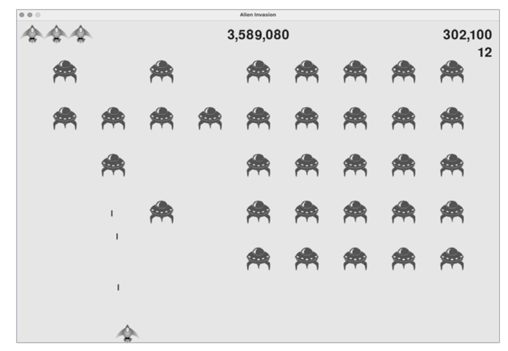

Abans de començar a codificar, necessitem instal·lar Pygame. Això es pot fer amb la següent comanda al terminal:
$ python -m pip install --user pygameCrea un fitxer anomenat alien_invasion.py que contindrà la classe principal del joc.
import sys
import pygame
class AlienInvasion:
"""Classe general per gestionar recursos i comportament del joc."""
def __init__(self):
"""Inicialitza el joc i crea recursos del joc."""
pygame.init()
self.screen = pygame.display.set_mode((1200, 800))
pygame.display.set_caption("Alien Invasion")
def run_game(self):
"""Inicia el bucle principal del joc."""
while True:
for event in pygame.event.get():
if event.type == pygame.QUIT:
sys.exit()
pygame.display.flip()
if __name__ == '__main__':
ai = AlienInvasion()
ai.run_game()
sys i pygame).AlienInvasion, que inicialitza la finestra del joc.run_game() és el bucle principal que gestiona els esdeveniments i actualitza la pantalla.Afegim un control per la taxa de fotogrames per assegurar que el joc corre a una velocitat constant.
self.clock = pygame.time.Clock()
run_game(), afegim:
self.clock.tick(60)
Clock per gestionar la taxa de fotogrames.Podem establir un color de fons diferent per al joc.
self.bg_color = (230, 230, 230)
self.screen.fill(self.bg_color)
Creem una classe Settings per gestionar totes les configuracions del joc.
class Settings:
"""Classe per emmagatzemar totes les configuracions per a Alien Invasion."""
def __init__(self):
"""Inicialitza les configuracions del joc."""
self.screen_width = 1200
self.screen_height = 800
self.bg_color = (230, 230, 230)
self.ship_speed = 1.5
Creem una classe Ship per gestionar el comportament de la nau del jugador.
class Ship:
"""Classe per gestionar la nau."""
def __init__(self, ai_game):
"""Inicialitza la nau i estableix la seva posició inicial."""
self.screen = ai_game.screen
self.image = pygame.image.load('images/ship.bmp')
self.rect = self.image.get_rect()
self.rect.midbottom = self.screen_rect.midbottom
Afegim funcionalitat per controlar el moviment de la nau amb les tecles de fletxa.
def _check_events(self):
"""Respon a les pulsacions de teclat i esdeveniments del ratolí."""
for event in pygame.event.get():
if event.type == pygame.KEYDOWN:
if event.key == pygame.K_RIGHT:
self.ship.moving_right = True
Afegim funcionalitat per disparar projectils quan el jugador prem la barra espaiadora.
def _fire_bullet(self):
"""Crea un nou projectil i l'afegeix al grup de projectils."""
new_bullet = Bullet(self)
self.bullets.add(new_bullet)
Bullet que gestiona la imatge i el moviment dels projectils.Implementem la detecció de col·lisions entre projectils i aliens i actualitzem la puntuació i el nivell.
collisions = pygame.sprite.groupcollide(self.bullets, self.aliens, True, True)
if collisions:
for aliens in collisions.values():
self.stats.score += self.settings.alien_points * len(aliens)
self.sb.prep_score()
check_high_score(self)
if not self.aliens:
self.bullets.empty()
self._create_fleet()
self.settings.increase_speed()
# Augmenta el nivell
self.stats.level += 1
self.sb.prep_level()
groupcollide() comprova si hi ha col·lisions entre dos grups de sprites i elimina els que han col·lisionat.Afegim condicions per acabar el joc quan el jugador perd totes les naus i mostrem la puntuació final.
if self.stats.ships_left <= 0:
self.game_active = False
pygame.mouse.set_visible(True)
Aquesta documentació ha cobert els aspectes fonamentals del codi del joc "Alien Invasion", incloent la instal·lació, configuració, moviment, i gestió de col·lisions. Amb aquest coneixement, podràs continuar desenvolupant i refinant el teu joc.
